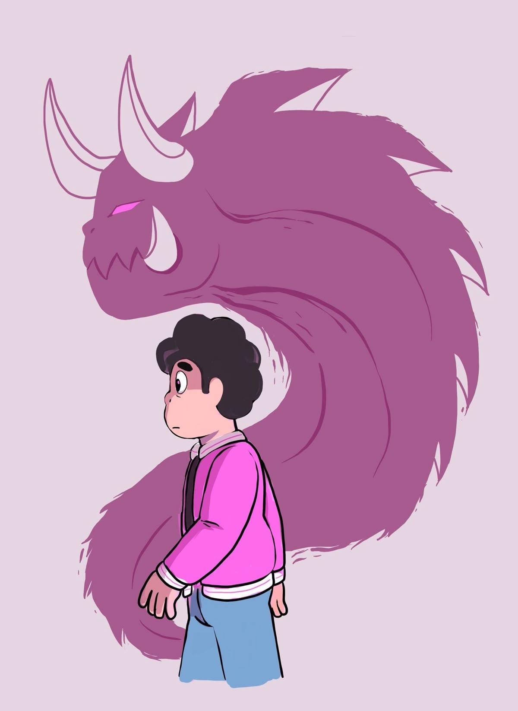

La Serie "Woke" que revolucionó la animación

Hablaremos sobre una de las series animadas más populares que pudo haber creado una persona. Así es, hablo de Steven Universe, una serie que se estrenó en 2013 y que se convirtió en un fenómeno cultural. La serie sigue las aventuras de una joven llamada Steven, quien es mitad humano y mitad gema, mientras lucha contra las fuerzas del mal para proteger a su hogar, Ciudad Playa. La serie es conocida por su representación positiva de la diversidad y la inclusión, así como por su enfoque en temas importantes como la identidad de género, la salud mental y la aceptación de uno mismo. Además, la serie ha sido elogiada por su animación vibrante y su banda sonora pegajosa. En resumen, Steven Universe es una serie animada que ha dejado una huella duradera en la cultura pop y ha inspirado a muchos fans en todo el mundo.
Origen
Steven Universe fue creada por Rebecca Sugar, quien también trabajó como guionista y artista de storyboard en la serie animada "Adventure Time". La serie se estrenó en Cartoon Network en 2013 y se convirtió rápidamente en un éxito entre los espectadores de todas las edades. La serie se inspiró en la infancia de Sugar y en su amor por la música, la animación y la cultura pop. La serie se desarrolló durante varios años antes de su estreno, y Sugar trabajó en estrecha colaboración con un equipo de animadores, guionistas y músicos para crear la serie. La serie se destacó por su enfoque en temas importantes como la identidad de género, la salud mental y la aceptación de uno mismo, lo que la convirtió en una serie innovadora y única en su género. Cabe destacar que fue la primera serie animada en ser dirigida por una mujer. Gracias a eso, la serie pudo abordar muchos temas considerados "woke" o "progress" que logró atraer a un público diverso y muy específico, que terminó siendo el cimiento de una gran comunidad amorosa y comprensiva.
Personajes Principales
-
Steven Universe: El protagonista de la serie, un joven mitad humano y mitad gema que lucha por proteger a su hogar y a sus amigos.

-
Garnet: La líder del grupo de gemas, una guerrera fuerte y sabia con el poder comparado a la de dos gemas en una sola. Siempre está dispuesta a ayudar a Steven.

-
Amatista: Una gema rebelde y divertida que es amiga cercana de Steven y Garnet pero que dentro de sí lleva una gran carga emocional.

-
Pearl: Una gema perfeccionista y leal que se preocupa profundamente por Steven y sus amigos. Lleva el secreto más revelador de todos.

Temas Importantes


- Identidad de Género: La serie aborda la identidad de género a través de varios personajes. Por ejemplo, Garnet es una fusión compuesto por dos personajes aparentemente "femeninos". Aunque, realmente en la serie se menciona que las Gems no cuentan con un género definido (puesto que no lo necesitan). Rebecca Sugar expresa que hizo esto intencionalmente para desafiar las normas tradicionales de género y para que su público pudiese identificarse con los personajes.
- Aceptación de Uno Mismo: La serie también aborda la importancia de aceptarse a uno mismo y de ser auténtico. Steven, como personaje principal, lucha por aceptar su identidad como mitad humano y mitad gema, y a lo largo de la serie, aprende a abrazar su singularidad y a ser fiel a sí mismo. La serie se centra mucho en el desarrollo de la autoaceptación (específicamente en el personaje de Steven). También logra expresarlo en otros personajes secundarios o antagonistas que terminan con arcos de redención y aceptan su nuevo destino en la tierra, proclamándose como verdaderos Cristal Gems.
- Salud Mental: La serie también aborda temas relacionados con la salud mental, como la ansiedad, la depresión y el trauma. Varios personajes en la serie luchan con problemas de salud mental, y la serie muestra cómo pueden afectar a las personas y cómo es importante buscar ayuda cuando se necesita. Un ejemplo de ello es Amatista, quien además de luchar con sus propios problemas de inseguiridad y vive acomplejada, sirviendo de reflejo de como los malos pensamientos pueden jugarnos en contra de no ser resueltos. Además, la serie también aborda el tema del autocuidado y la importancia de cuidar de uno mismo para mantener una buena salud mental.
Curiosidades

El Descubrimiento de Ronaldo
En la serie, existe un personaje llamado "Ronaldo", el cual funciona como un personaje secundario y en algunos momentos, como un alivio cómico o actúa como ese personaje friki molesto que está encima del protagonista. Bien, según la cronología de la serie y la misma inteligencia del personaje: él fue de los primeros (por no decir EL primero) en descubrir la dinastía Diamante y estuvo a punto de desglosar la muerte de Pink Diamond. De haber sido escuchado por alguien, este personaje pudo ser la respuesta desde un principio.

El Poder de Spinel
Spinel es un personaje que aparece en la serie y es conocido por su personalidad única y su relación con otros personajes. Bien, este personaje es el único (junto a Jaspe) en derrotar a todas las Crystal Gems en su primera aparición, lo que lo convierte en un personaje formidable y temido por los demás. Además, su diseño y personalidad han sido elogiados por los fans de la serie.

La Relación de Greg y Amatista
En uno de los primeros episodios de las primeras temporadas, podemos ver cómo Greg y Amatista llevan una relación muy cercana, casi pareciéndose a algo más que una simple amistad. Sin embargo, esta relación se vuelve tensa y complicada a medida que avanza la serie, lo que ha generado mucha especulación entre los fans sobre la naturaleza de su relación. Algunos fans han sugerido que podrían haber tenido una relación romántica en algún momento, mientras que otros creen que simplemente eran amigos cercanos. La serie nunca ha confirmado ni negado ninguna de estas teorías, lo que ha dejado a los fans con muchas preguntas sin respuesta.

El Misterio del Cofre Abierto
En "Steven Universe Future", podemos observar cómo varios de los ítems del fondo de la melena de León han cambiado. Específicamente, el cofre, ya que este último aparece en la serie abierto, cuando en la serie principal siempre se mantuvo cerrado. Muchos fans teorizan que es un mensaje subliminal donde proyecta el desarrollo y crecimiento de Steven, puesto que pasa de ser un niño a un joven adulto.

Éxito Musical Global
La serie ha sido elogiada por su animación vibrante y su banda sonora pegajosa, creando muchísimos temas emblemáticos. Tanto así, que incluso estos mismos compiten contra sí mismos con distintos doblajes alrededor del mundo.
Mensaje Final


Al final de la serie (es decir, en S.U Future), nos muestran a un Steven mayor sufriendo las consecuencias de haberse saltado muchas etapas de su vida y haber sido expuesto a mucho estrés a su corta edad. Además de haber pasado por situaciones traumáticas que suprimió y decidió ignorar. Sin mencionar el gran peso y las expectativas que llevaba consigo, lo cual le generaba una gran inseguridad y temor en sí mismo.